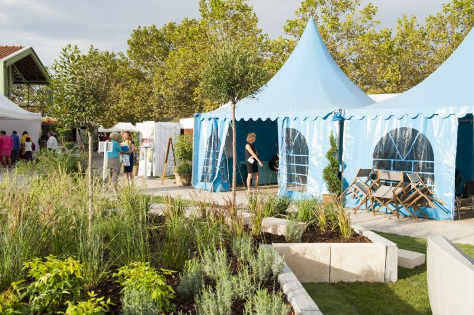
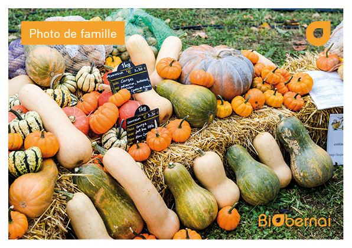
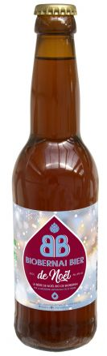
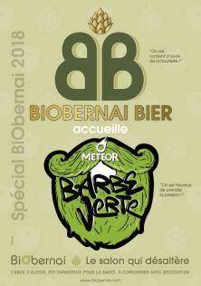

BiObernai
Par Alsace bio
Présentation de l'association
Le concept de BiObernai

Organisé depuis 14 ans, dans l’esprit convivial d’un grand marché à ciel ouvert face aux remparts de la ville historique d’Obernai, BiObernai, le salon de l’agriculture biologique en Alsace, invite chaque année plus de 21 000 visiteurs à venir se plonger dans l’univers du bio d’Alsace et d’ailleurs.
Un salon vitrine du bio, un marché en plein essor
Le nombre croissant de visiteurs montre un engouement sans précédant pour le « bio ». Les médias se font d’ailleurs largement l’écho de cette tendance de société au développement spectaculaire. Adeptes d’un mode de vie plus respectueux et éthique de leur santé et de l’environnement ou simple néophyte en quête d’une initiation à cet univers, le public de BiObernai a la possibilité durant 3 jours d’appréhender la culture bio sous de multiples facettes : en rassemblant de nombreux acteurs de la filière bio d’Alsace et d’ailleurs, BiObernai offre à ses visiteurs un espace d’information, de rencontres, d’échanges et de partages autour de ce qui est en train de devenir un véritable mode de vie et de consommation porteur de valeurs plébiscitées : authenticité, respect, éthique, solidarité, consommation responsable et collaborative, …
Un salon à l’esprit convivial d’une grande fête de village
Conçu dans l’esprit convivial d’une grande fête de village, aux pieds de remparts de la ville pittoresque d’Obernai, BiObernai propose aux visiteurs un parcours de visite à travers différents espaces thématiques : quels que soient ses attentes, besoins ou centres d’intérêts, chacun peut y explorer, à son rythme, les différentes facettes du bio. Outre la possibilité d’y faire ses achats directement auprès des exposants, une multitude d’activités, toujours guidées dans un esprit collaboratif, pédagogique et ludique est proposée pour satisfaire tous les publics : conférences et ateliers thématiques (bien-être & santé, environnement, écomobilité, initiatives locales solidaires, etc), nombreuses animations pour petits et grands (ateliers enfants, ateliers cuisine, ateliers bien-être…), déambulations et prestations artistiques mêlant humour et poésie … BiObernai est devenu au fil des années une manifestation où il fait bon venir en famille ou entre amis, pour une journée ou plus.
BiObernai Bier
Son actualité
Faire-part de naissance : Bienvenue à la BiObernai Bier de Noël
Obernai - 28/11/18
La BiObernai Bier, la bière 100% bio de BiObernai lancée en 2016 a la joie de présenter sa petite soeur, la BiObernai Bier de Noël, évidemment 100% bio, 100% locale ! Avec une recette agréablement épicée, concoctée et brassée par la Brasserie Saint-Pierre, cette bière de saison devrait réjouir les amateurs.
Laissons son créateur la présenter
Cette bière se caractérise par la générosité des ingrédients qui la composent. Sa mousse est aussi gourmande que moelleuse, sa richesse aromatique est dominée par un subtil mélange d’épices de Noël, de cannelle et de mandarine. Sa fine amertume est donnée par des houblons bio d’Alsace. Un mélange de 4 malts soigneusement sélectionnés lui offre une teinte cuivrée et une note de céréales douce.
- 100% houblon bio d'Alsace
- 100% purs malts d'orge bio
Alc.6%. Bière bio de fermentation haute, non filtrée et non pasteurisée. Brassée et embouteillée à Saint-Pierre, en Alsace !
En vente dès maintenant dans quelques points de vente choisis.
- Boutique de la Brasserie Saint-Pierre (Saint Pierre)
- Magasins bio LA SOURCE (Barr et Obernai)
- Carrefour contact (Epfig)
Et aussi à venir déguster et acheter sur le marché de Noël d'Obernai à partir du 1er décembre - Chalet de la Brasserie Saint-Pierre
La BiOBernai Bier accueille la toute jeune Barbe Verte
Obernai - 12/09/18
La 15ème édition du salon BiObernai aura le plaisir d'accueillir cette année le lancement de la 1ère bière bio de METEOR, la Barbe Verte. Notre BiObernai Bier est très heureuse d'accueillir cette nouvelle venue sur le marché du bio !
A venir apprécier durant les 3 jours du salon du 14 au 16 septembre 2018 à Obernai !
Son histoire

Née de la volonté des organisateurs du salon BiObernai de créer leur propre bière bio, la BiObernai Bier, 100% bio, artisanale et locale a pu voir le jour en 2016 grâce à une campagne de financement participatif réussie. Près de 100 contributeurs (entreprises et particuliers) se sont alors mobilisés autour de ce projet, permettant de rassembler plus de 12 000 euros pour son lancement officiel en octobre 2016, en partenariat avec la Brasserie artisanale de Saint-Pierre. A ce jour, la BiObernai Bier est commercialisée par plusieurs enseignes locales de la grande distribution, des magasins biologiques, quelques restaurants bars ainsi qu’à la boutique de la Brasserie de Saint-Pierre (Liste points de vente). Elle est désormais la bière officielle de l’événement, à découvrir lors de chaque édition et dans le cadre d’autres manifestations auxquelles BiObernai s'associe.
Où l'acheter, la consommer ?
Outre chaque année sur les buvettes du salon BiObernai, la BiObernai Bier s'achète et se consomme dans une bonne trentaine de points en Alsace et même ailleurs.
- MAGASINS BIO & SUPERMARCHES
- Auchan Illkirch (67)
- Auchan Hautepierre (67)
- Botanic Obernai (67)
- Botanic Epinal (88)
- Brasserie de St-Pierre Saint-Pierre (67)
- Bio-Jardin Didenheim (68)
- Carrefour contact Entzheim (67)
- Cora Dorlisheim (67)
- Ferme Durr Boofzheim (67)
- Intermarché Benfeld (67)
- BARS RESTAURANTS
- Au relais de l’Ill Sermersheim (67)
- La Ruche aux 2 Reines Strasbourg (67)
- Le Boma (Hôtel Restaurant Bar) Strasbourg (67)
- CAVE A BIERES et autres
- Brun Houblon, Ste Geneviève des Bois (91)
- Charcuterie Tempé-Maurer Mulhouse (68)
- Charcuterie Tempé-Maurer Toulouse (31)
- Charcuterie Tempé-Maurer Riedisheim (68)
Informations pratiques
Où se déroule BiObernai ?
Sur le parking des Remparts à Obernai (67 - Bas-Rhin). Un bel espace arboré aux pieds des remparts, à 2 pas du charmant centre ville d'Obernai.
Pour venir nous voir
Une fois sur place ?
Une fois sur place profitez des navettes gratuites, des navettes gratuites circulent entre la zone d'activités (ZA) Sud, le parking Cosec (parking du stade) pour acheminer les visiteurs sur le site du Salon. D'autres parkings plus proches sont directement accessibles à pieds (salle des sports et pré). Notre sympathique équipe des bénévoles parking vous orientera avec le sourire pour faciliter votre arrivée :-)!
Vous venez à vélo ?
Un parking à vélo est mis gracieusement à votre disposition à l'entrée du Salon. Tout visiteur venant à vélo au salon bénéficie d'une entrée gratuite !
Et si vous préférez le train ?
La gare d'Obernai se situe à 5 mn à pied du parking des Remparts où se déroule le salon. Tout visiteur présentant son titre de transport à la billeterie du salon se verra offrir son entrée !
Horaires & tarifs
Nouveaux horaires
Vendredi 13, samedi 14 et dimanche 15 septembre de 10h à 19h
Tarifs
Venez avant 12h chaque matin, entrez gratuitement au salon !
(Accès gratuit pour TOUS vendredi, samedi et dimanche matin dès 10h et jusqu’à 12h)
A partir de 12h : 5 €
Demi tarif : 2,50 € (réservé aux personnes sans emploi, étudiants, personnes à mobilité réduite sur présentation d'un justificatif)
GRATUIT pour les - de 12 ans
GRATUIT pour les visiteurs venant à vélo et/ou par le train (sur présentation de leur titre de transport à l'accueil billeterie)
Animaux
Les animaux tenus en laisse sont les bienvenus sur le site du salon ! Nous invitons simplement leurs propriétaires à veiller à les tenir en laisse et à la propreté des lieux.